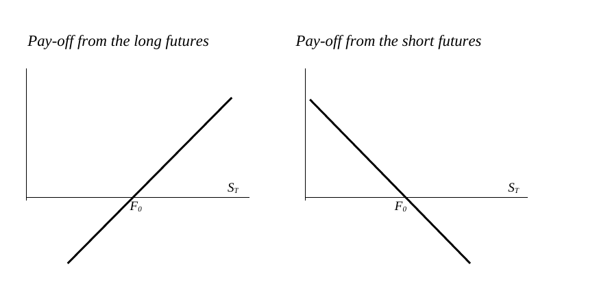

Convert futures quotations into payoff and conditional loss bounds
Explanation, worked examples and practice
Useful first: Distinguish futures contract operation and its limits
Outcome and conditions
Convert cents and fractional quotations, calculate tick values and signed long/short cumulative payoff with total contract exposure, and justify maximum-loss claims from explicit price bounds. Interpret zero crossing and slope as trading \(\mathrm{P/L}\) rather than account balance. Assume fixed \(N\) and \(q\) and ignore settlement-flow interest; a maturity use of spot additionally assumes \(F_T=S_T\).
Study conditions, assessment scope and sources
Finished-note locations: Standardized futures specifications; Daily profit and loss, with units; Payoff and the size of possible losses; Problem 3: copper and maximum loss; The seminar's film illustration.
Supported learning permits these note sections and the worked key. Independent checks permit blank paper and a non-programmable calculator only; no notes, formula list, key, hints, external help or generated solution. The tutor must confirm these conditions and known prior item exposure before marking independence. Unknown conditions are unscorable for independence, even if the content is correct. These stricter practice conditions do not purport to reproduce all exam rules. Hypothetical tasks below instantiate only note-supported mechanisms.
Prerequisites and checks
Check the prerequisites
O001-P2 / v1: A trader buys three contracts and later sells three equivalent contracts. Name the initial position and say which price direction gives a trading gain. Key: long; rising closing futures price. Pass both; partial missing direction reason; fail short/falling gain. Repair O001 Motivation, intuition, and definitions and Worked example, then O002 W1. This is needed to select the sign before multiplying exposure.
A qualifying committed prerequisite result may skip its diagnostic only when its exact current tuple or explicitly approved compatible tuple and independence conditions are known. Familiarity is insufficient. Diagnostics do not count as acquisition checks. Do each relevant diagnostic once; failed/partial responses follow the stated repair, then one fresh full check rather than repeated diagnosis.
Motivation, intuition, and definitions
Motivation: A one-cent move can be a large money transfer. \(N\) is number of contracts and \(q\) the per-contract multiplier, in underlying units per contract or dollars per quoted point. Convert cents to dollars before using a dollar multiplier. \(\text{Tick value}=\text{tick size}\times q\); multiply by \(N\) for the position. A fractional quote 99–21¾ in thirty-seconds is \(99+21.75/32=99.6796875\), not 99.2175. Only this arithmetic is supported; the source's bond/T-bill label inconsistency is preserved. A derivative's underlying can be a commodity, index, currency, equity or rate instrument; actual specifications govern its units.
Explanation steps
- Convert every quote to the units matched by \(q\). Dollars per pound times pounds gives dollars.
- A long earns \(Nq(F_{\mathrm{close}}-F_{\mathrm{open}})\); a short earns \(Nq(F_{\mathrm{open}}-F_{\mathrm{close}})\). Opposite sides sum to zero for the same inputs.
- Daily differences telescope, so cumulative payoff uses endpoints for a fixed position; at maturity replace closing \(F\) by \(S\) only under convergence. Break-even is \(\text{final price}=F_{\mathrm{open}}\); long slope +\(Nq\) and short −\(Nq\).
- Margin is the trader's deposit, not a payoff ceiling or asset price. With \(F\ge 0\), a long's maximum loss is \(NqF_{\mathrm{open}}\) at zero. If no lower bound exists this finite maximum is not established. With no upper bound, short loss is unbounded. Price/position limits likewise do not truncate the payoff line.
- A changed number example is a parallel calculation, not proof of broad transfer. Keep given price-bound assumptions visible in the answer.
Read the full explanation
Reading context
Deliver these complete reused passages before the worked example; the earlier concise teaching prompts are checkpoints, not substitutes. Necessary prerequisite lessons remain the routes specified above. Course-organization details in O001 are supporting context, not additional scoring components.
Source passage
Origin: reused complete checked passage Standardized futures specifications; fingerprint ed4177199ebe557e2c52129bcd94b690b22e553a5eafba9ce5f4dc19656c3045. Heading depth alone is adapted.
Standardized futures specifications
A futures contract is a standardized agreement for a future exchange, traded on a specialized exchange. The trader accepts the published terms and chooses whether to buy or sell at the available futures price. Standardization makes contracts comparable and allows an opposite trade to unwind a position. The lecture presents this ease of offsetting as an important source of liquidity. L10(EssentialsOfFuturesTrading).pptx, slide 4, 7 FI01(Futures Contracts).doc, Ch. I, LibreOffice-rendered p. 2–3 02_seminar.pdf, PDF p. 3
A futures contract is a derivative because its price is derived from the underlying asset's price. The specifications identify the underlying asset, contract size, delivery month, quotation and minimum price movement, and delivery arrangements. An underlying asset may be a commodity, an index, an equity, a currency or an interest-rate-related instrument. For commodities, the grade of quality matters because goods of different quality need not have the same price. Delivery location also matters when transport costs are significant; alternative locations can require price adjustments. 02_seminar.pdf, PDF p. 3–4 02_seminar.pdf, PDF p. 8
The contract multiplier converts a quoted price movement into a monetary gain or loss. If a price is quoted in dollars per barrel and the contract covers 1,000 barrels, a $0.01 rise per barrel changes the contract's monetary value by $10. If an index contract pays $50 per index point and its minimum movement is 0.25 points, one tick is $12.50. In both cases,
The units must cancel correctly: dollars per barrel times barrels gives dollars; index points times dollars per point gives dollars. For \(N\) contracts, multiply the monetary change by \(N\). These are the seminar's examples, rather than claims that every oil or index contract uses those specifications. 02_seminar.pdf, PDF p. 5
The seminar's fractional quotation example is \(99+21.75/32=99.6796875\), or approximately 99.68, for the written quote \(99\text{-}21\tfrac34\). Its text first discusses Treasury bonds and then labels the example “US T-Bill”; the label is internally inconsistent, so the verified learning point here is the arithmetic of the fractional quote. 02_seminar.pdf, PDF p. 7
The seminar describes usual maturities as ranging from one month to two years. This is its introductory description; a particular contract's published terms determine its available maturities. 02_seminar.pdf, PDF p. 6
Delivery month is part of the contract's identity: a June contract and a September contract are different obligations. The lecture and seminar describe March, June, September and December as usual financial-contract months, and the seminar says commodity contracts may be available monthly. These are the supplied introductory descriptions; the specified contract calendar remains necessary for an actual contract. A contract that is too large can exclude smaller traders, while one that is too small increases the number of transactions needed for a desired exposure. L10(EssentialsOfFuturesTrading).pptx, slide 4 FI01(Futures Contracts).doc, Ch. I, LibreOffice-rendered p. 3 02_seminar.pdf, PDF p. 6
Source passage
Origin: reused complete checked passage Daily profit and loss, with units; fingerprint c92b574f4c33c97bdbefad673c63cc8029a344a79d7b1da69ed2bba44076e313. Heading depth alone is adapted.
Daily profit and loss, with units
Let \(F_0\) be the opening futures price, \(F_t\) the settlement price at the end of day t, \(N\) the number of contracts and \(q\) the multiplier converting one quoted price unit into money per contract. With a constant position size and multiplier,
A price rise credits the long and debits the short; a fall reverses these transfers. The lecture writes the price difference for a normalized unit; \(Nq\) restores the contract units used by the seminar's tick examples. For a commodity quoted in dollars per pound, \(q\) is pounds per contract. For a contract quoted directly in dollars per contract, \(q=1\). L10(EssentialsOfFuturesTrading).pptx, slide 6 FI01(Futures Contracts).doc, Ch. I, LibreOffice-rendered p. 4–5 02_seminar.pdf, PDF p. 5, 12
Adding the daily transfers cancels every intermediate price:
The short obtains the opposite amount. This telescoping sum explains why the total trading result equals the closing minus opening price, even though it is paid in installments. The account can require cash along the way even when the final cumulative result is favorable. The source's reasoning ignores interest earned or paid on the timing of settlement cash flows. L10(EssentialsOfFuturesTrading).pptx, slide 6 FI01(Futures Contracts).doc, Ch. I, LibreOffice-rendered p. 7
Source passage
Origin: reused complete checked passage Payoff and the size of possible losses; fingerprint c92b574f4c33c97bdbefad673c63cc8029a344a79d7b1da69ed2bba44076e313. Heading depth alone is adapted.
Payoff and the size of possible losses
For a position held to maturity with \(F_T=S_T\), cumulative trading results are
They have equal magnitude and opposite signs. A long benefits from a higher final underlying price; a short benefits from a lower one. The source diagram crosses zero at \(S_T=F_0\) and shows linear results on either side. Margin does not truncate either line. FI01(Futures Contracts).doc, Ch. I, LibreOffice-rendered p. 7–8 L10(EssentialsOfFuturesTrading).pptx, slide 11

The horizontal axis is the maturity spot price \(S_T\). The long line slopes upward and the short line downward; their common break-even point is the opening futures price \(F_0\). The vertical direction represents gain/loss, not the margin account balance. FI01(Futures Contracts).doc, Ch. I, LibreOffice-rendered p. 8
A claimed maximum long loss needs a lower bound on the price. If the modeled final price cannot go below zero, the maximum loss is \(NqF_0\) at zero. If the problem imposes no lower bound, that particular finite maximum does not follow from the payoff formula. With no upper price bound, a short's theoretical loss has no finite maximum. These are algebraic consequences of the source payoff, and the required assumptions are made explicit in the copper exercise. FI01(Futures Contracts).doc, Ch. I, LibreOffice-rendered p. 8 02_seminar.pdf, PDF p. 19
Source passage
Origin: reused complete checked passage Problem 3: copper and maximum loss; fingerprint b10a0ed1ddfde242583a447a4246738dc8f31af4dca1c5f77970596782335d04. Heading depth alone is adapted.
Problem 3: copper and maximum loss
One long November contract covers 25,000 pounds at $0.78 per pound. Its normalized cumulative result at a closing/settlement price \(F\) is
If one additionally assumes \(F\) cannot be negative, the largest loss is \(25000\times0.78=\$19,500\), reached at \(F=0\). The question itself does not state a lower price bound, so \(19,500\) is a conditional result rather than a bound implied by futures margin. If the model admits arbitrarily negative \(F\), the long formula has no finite loss bound. For the short, \(\Pi^{\mathrm{short}}=25000(0.78-F)\): with no upper price bound, an arbitrarily high \(F\) gives an arbitrarily large loss. The initial margin is never a maximum-loss guarantee. 02_seminar.pdf, PDF p. 19 FI01(Futures Contracts).doc, Ch. I, LibreOffice-rendered p. 8
Source passage
Origin: reused complete checked passage The seminar's film illustration; fingerprint b10a0ed1ddfde242583a447a4246738dc8f31af4dca1c5f77970596782335d04. Heading depth alone is adapted.
The seminar's film illustration
Page 15 supplies a short-trade illustration: 450,000 pounds sold at $1.42 and bought back at $0.29, a difference of $1.13 per pound. Its multiplication is \(450000\times1.13=\$508,500\), corresponding to 30 contracts of 15,000 pounds each. This is the supplied illustration's trading gain before costs, not an explanation of its margin-account path. The PDF also contains external video links and the phrase “Eddie Murphy Rule”; the selected slide does not define the rule, and the videos were not opened. No legal claim is inferred from that label. 02_seminar.pdf, PDF p. 15
Worked example
O002-W1 / item_version 1 / worked-example; source-supported example or explicitly hypothetical instantiation.
Source copper case: one long, \(q=25,000\) pounds, opening $0.78/lb. At \(F=\$0.70/\text{lb}\), hypothetical closing price, \(\mathrm{P/L}=25,000(0.70-0.78)=-\$2,000\); short opposite +$2,000. If \(F\ge 0\), maximum long loss \(=\$19,500\) at zero, independent of margin. If negative prices are unconstrained no finite bound follows; short with no upper price bound has no finite maximum loss. One $0.01/lb tick is $250 for this specified hypothetical tick. Source index example \(0.25\text{ points}\times\$50/\text{point}=\$12.50\) per contract. Source film calculation: \(450,000\) pounds short at \(1.42\) and offset at \(0.29\) gains \(450,000\times 1.13=\$508,500\), equal to \(30\text{ contracts}\times15,000\text{ pounds}\); this supplies no account path or legal explanation.
Practice with fading assistance
Write your reasoning, then reveal the complete key to check each step.
A local draft for your own study.
Reveal explanation
Key: \(1.50\); \(+0.05\); \(2,000\); +$100; -$100; $20/tick. \(98+16/32=98.5\). Maximum loss $3,000, not $100; without lower bound no such finite bound, short unbounded absent upper bound. Require units/sign and bounded-loss reasoning.
Allowed help: reveal the named definitions, then at most two prepared hints in Misconceptions and correction. After the learner supplies the missing steps and their reasons, hide all keys and use a fresh full check. Supported success is practice evidence only. If even the full worked correction does not restore the needed component, pause and follow the dependency repair.
Rubric and independence
Self-assessment criteria and tutor checks
The required components are: quotation_and_units; signed_payoff_and_tick_value; price_bound_and_margin_interpretation. Each full check below explicitly elicits and keys every component. Pass requires all its essential reasoning and requested outputs without a critical error. Partial means a correct mechanism but a missing component, unresolved sign/unit, or isolated arithmetic slip. Fail means a critical conceptual error persists or the method cannot establish the result. Unscorable means the response/conditions cannot be interpreted reliably; ask the existing prompt once for clarification, without adding a new assessment. Accept algebraically equivalent expressions, clearly defined opposite cash-flow signs, and plain-language explanations with the same mechanism. An arithmetic slip is partial until independently corrected; it is not automatically a conceptual failure. No numerical score is inferred.
Critical errors: Using cents as dollars; short gains on a rise; margin is maximum loss; finite long bound claimed without a lower bound; fractional thirty-seconds treated as decimal digits.
Acquisition requires two distinct unassisted passes from the explicitly permitted routes O002-I1/O002-I2, O002-I1/O002-D1, O002-I1/O002-D2, O002-I2/O002-D1, O002-I2/O002-D2, O002-D1/O002-D2. I items normally establish acquisition; an unused D item may replace an exposed or failed I item and then cannot later be counted as delayed retention. Each selected full item assesses all listed components, so every route covers them twice. W1, S1, prerequisite diagnostics and the narrow C1 correction are forbidden substitutes. The D bank is finite: never repeat an exposed item to certify fresh learning and never invent changed numbers. If fewer than two unused full items remain, raise a plan_issue for a new prepared bank.
| Component | I1 | I2 | D1 | D2 |
|---|---|---|---|---|
| quotation_and_units | required | required | required | required |
| signed_payoff_and_tick_value | required | required | required | required |
| price_bound_and_margin_interpretation | required | required | required | required |
Misconceptions and correction
Signs: hundredfold cent error, reversed short sign, maximum loss equated to margin, fractional digits treated as decimals. Correction: cancel units first, choose winning direction before multiplying, and derive the bound by the allowed extreme final price. Hint 1: quote and \(q\) must share dollars. Hint 2: 5 cents is 0.05 dollars. O002-C1 / v1: One short of 2,000 units sees \(100\to 105\) cents; give \(\mathrm{P/L}\) and say whether $20 margin bounds loss. Key: \(2,000(1.00-1.05)=-\$100\); margin does not bound loss. Pass includes sign/unit and deposit distinction; partial missing distinction; fail reversed sign/cent factor.
The sign alone is a tentative diagnosis; use the learner's reasoning to establish the confusion. Score the initial response before any hint. Hint 1 points to the named distinction; hint 2 points to the first correct step. After two ineffective hints show the prepared key, then pause if the fresh C1 response still fails. C1 checks the repaired component only and cannot replace a full independent check.
Immediate and delayed checks
All four assessment items have role full_capability_check. Immediate I1/I2 use item_version 2; delayed D1/D2 retain item_version 1. I1/I2 are immediate; D1/D2 are prepared delayed variants. D items may establish delayed success only when unused, unassisted, attempted before recap, at least 24 elapsed hours after acquisition and the most recent relevant solution/teaching exposure, with intervening exposure recorded. Early D attempts may be immediate checks but are not delayed evidence. Each delayed success is separate from initial acquisition. Numerical changes are parallel variants; a changed buyer/seller context is bounded near transfer, never proof of broad transfer.
A local draft for your own study.
Reveal explanation
Key and essential rubric: \(1.76\to 1.68\) dollars/lb; exposure \(3\times 1,200=3,600\) lb. Long \(3,600(1.68-1.76)=-\$288\); opposite short +$288. Tick \(0.02\times 3,600=\$72\) per position tick. Break-even \(1.76\) dollars/lb; long payoff rises and short payoff falls with final price. Fraction \(100+11.5/32=100.359375\); the source label inconsistency does not identify an instrument. With \(F\ge 0\), maximum long loss is \(3,600\times 1.76=\$6,336\) at zero. Without a lower price bound no finite long maximum is established; without an upper price bound a short has unbounded loss. Margin is separate account funding and does not truncate payoff. All three components and their stated assumptions/units are required.
A local draft for your own study.
Reveal explanation
Key and essential rubric: Exposure \(2\times\$40=\$80/\text{point}\). Short \(80(1800-1807)=-\$560\); opposite long +$560. Tick \(0.5\times 80=\$40\) per position tick. Break-even \(1800\) points; short payoff slopes downward and long payoff upward. Fraction \(103+10.25/32=103.3203125\); \(65\text{ cents}=\$0.65\). For the separate nonnegative-price long, maximum loss is \(18,000\times 0.65=\$11,700\) at zero. Removing the lower price bound removes that finite bound; absence of an upper price bound makes short loss unbounded. Initial deposit is separate funding and cannot bound the price-based payoff. All three components and their stated assumptions/units are required.
A local draft for your own study.
Reveal explanation
Key and essential rubric: \(2.40\to 2.50\) dollars/lb; exposure \(1,500\) lb. Long +$150, short -$150; tick \(0.02\times 1,500=\$30\). Break-even \(2.40\); long upward and short downward. \(97+12.25/32=97.3828125\). Nonnegative long maximum \(1,500\times 2.40=\$3,600\); without lower bound finite maximum not established; short unbounded absent upper bound. Margin neither buys underlying nor caps loss. All three components required.
A local draft for your own study.
Reveal explanation
Key and essential rubric: \(3.20\to 3.10\) dollars/unit, exposure \(1,000\). Short +$100, long -$100; tick $10. Break-even \(3.20\), short downward/long upward. \(102+24.75/32=102.7734375\). Long max $3,200 at zero if nonnegative; no finite bound follows absent lower bound; short unbounded absent upper bound. Deposit does not truncate lines; account balance and \(\mathrm{P/L}\) differ. All three components required.
Content provenance and generation boundaries
Sources and scope
The complete checked-note passages above are reused with only heading-depth adaptation; exact origins and fingerprints are in source_manifest.md. Existing plan-created hypothetical exercises and their full keys are retained from P003; their algebra instantiates the included checked definitions. No new external academic claims are introduced. All figures retain checked vault-relative asset paths, captions and source qualifications. Main examples and assessment routes are fully prepared here.
Preserved assessment contract: only the named prepared full-capability items and six routes may establish acquisition or delayed evidence. Additional verified examples or practice may support explanation but cannot replace a named full check or reassessment gate. Teach may accept an independently verified equivalent method meeting the same pre-answer components and conditions. Ambiguous criteria or an exhausted fresh bank return to plan. The current objective revision is 3; unchanged item/criterion versions remain those explicitly stated above.